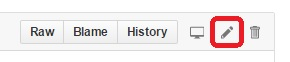

Find the page you wish to edit and click the Edit on GitHub link on the top right of the page to be taken to its source
Select the Edit this file icon

Make the changes in the “Edit file” tab and use the “Preview changes” tab to check the change. Note: links to other wiki pages are not rendered properly and will appear with :ref:` in front
At the bottom of the page under “Commit changes”
Fill in the subject line with a short description of the change
Optionally fill in an extended description
Click “Create a new branch for this commit”
Press the “Commit changes” button
When taken to the “Open a pull request” screen, press the “Create pull request” button
Wiki home pages (named “index.html”) do not have the Edit on GitHub link. You can still edit them by manually navigating to the desired page on Github.